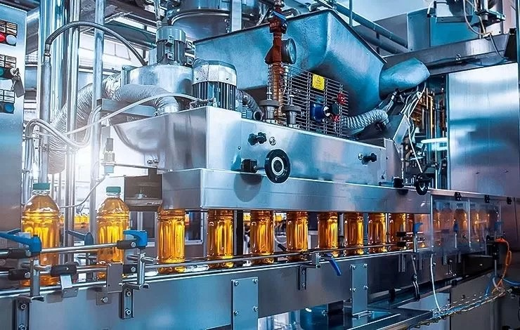

industrias alimenticia

A indústria alimentícia refere-se ao conjunto de atividades industriais que visam produzir alimentos ou ingredientes para preparação de alimentos, geralmente em grandes quantidades para comercialização. Este setor abrange desde a produção de alimentos frescos até a fabricação de alimentos prontos para consumo e a produção de bebidas.
 Importância da Indústria Alimentícia: Segurança Alimentar: Garantir que haja alimentos suficientes, saudáveis e acessíveis para a população. Geração de Empregos: É um setor que gera muitos empregos diretos e indiretos. Crescimento Econômico: Contribui significativamente para o PIB do país. Inovação e Tecnologia: O setor investe constantemente em pesquisa e desenvolvimento para melhorar os produtos e processos. Exportação: O Brasil é um importante exportador de alimentos industrializados. Sustentabilidade: A indústria busca cada vez mais práticas mais sustentáveis.